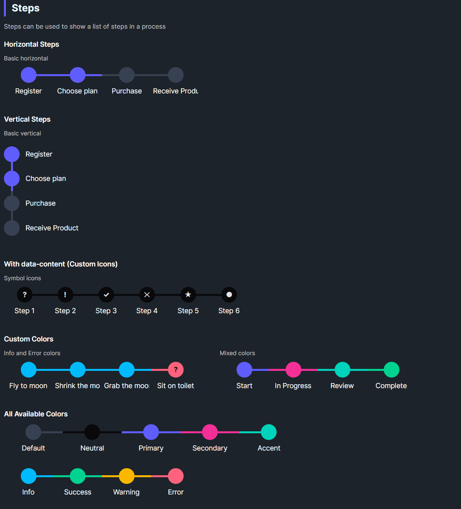
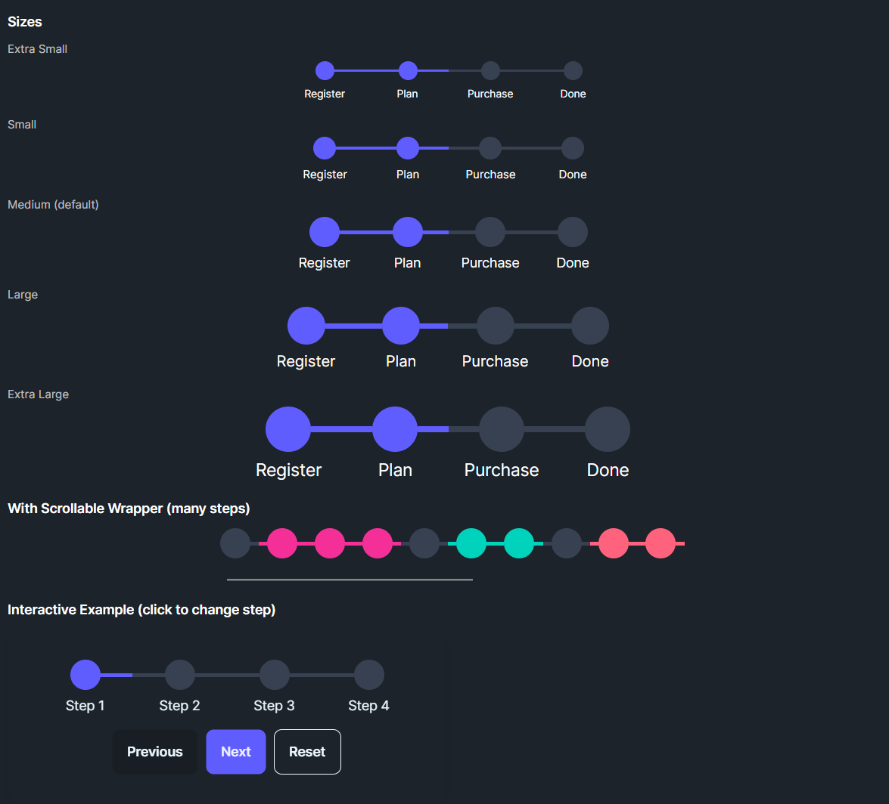

DaisySteps renders a sequence of step items with lines and circles. It supports horizontal or vertical layouts, 5 sizes, colored states per step, and an SelectedIndex to mark completed/active steps. Each DaisyStepItem can show custom text or icons via Content/DataContent.
| Property | Description |
|---|---|
Orientation |
Horizontal (default) or Vertical. |
Size |
ExtraSmall, Small, Medium (default), Large, ExtraLarge (affects circle/line sizes and fonts). |
SelectedIndex |
0-based index; steps with index ≤ SelectedIndex become active. |
JsonSteps |
A JSON string describing step objects: [{"content": "Label", "color": "Primary", "isActive": true}, ...]. |
| Property | Description |
|---|---|
Content |
Step label shown under/right of the circle. |
DataContent |
Optional text inside the circle (number/icon). |
Icon |
Slot available if you template-in; not used in default theme. |
Color |
Step color: Default, Neutral, Primary, Secondary, Accent, Info, Success, Warning, Error. |
IsActive |
Set by DaisySteps when SelectedIndex includes the step. |
<!-- Horizontal steps -->
<controls:DaisySteps SelectedIndex="1" Width="400">
<controls:DaisyStepItem Content="Register" Color="Primary" />
<controls:DaisyStepItem Content="Choose plan" Color="Primary" />
<controls:DaisyStepItem Content="Purchase" />
<controls:DaisyStepItem Content="Receive" />
</controls:DaisySteps>
<!-- Vertical steps -->
<controls:DaisySteps Orientation="Vertical" SelectedIndex="1" Height="200">
<controls:DaisyStepItem Content="Register" Color="Primary" />
<controls:DaisyStepItem Content="Plan" Color="Primary" />
<controls:DaisyStepItem Content="Purchase" />
</controls:DaisySteps>
<!-- Custom data content -->
<controls:DaisySteps Width="300">
<controls:DaisyStepItem Content="Step 1" DataContent="?" Color="Neutral" />
<controls:DaisyStepItem Content="Step 2" DataContent="!" Color="Neutral" />
<controls:DaisyStepItem Content="Step 3" DataContent="✓" Color="Success" />
</controls:DaisySteps>
<!-- Dynamic JSON Loading -->
<controls:DaisySteps JsonSteps='[
{"content": "Initialize", "color": "Neutral", "isActive": true},
{"content": "Upload Data", "color": "Primary", "isActive": true},
{"content": "Processing", "color": "Warning", "isActive": false},
{"content": "Finish", "color": "Success", "isActive": false}
]' />// C#: JSON string
var steps = new DaisySteps
{
Width = 400,
JsonSteps = "[{\"content\":\"Register\",\"color\":\"Primary\",\"isActive\":true}," +
"{\"content\":\"Choose plan\",\"color\":\"Primary\"}," +
"{\"content\":\"Purchase\"}," +
"{\"content\":\"Receive\"}]"
};SelectedIndex as progress advances; earlier steps automatically become active.Color to convey status (e.g., Error for failed steps, Success for completed).DataContent or a templated icon) to show numbers or checkmarks.